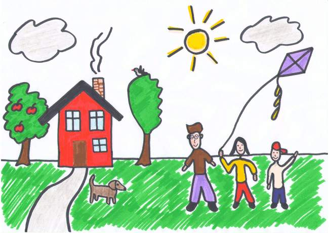
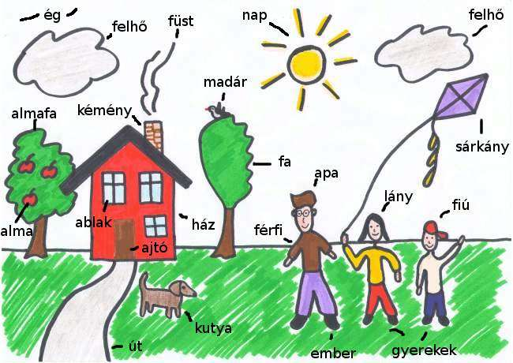

Primii pași · Lecția 004
Unde suntem?
Spune unde se află persoane și obiecte. Citește exemplele în perechi, apoi încearcă să formulezi propriile răspunsuri.
În această pagină
În această lecție vom învăța câteva cuvinte care exprimă relații în spațiu. Totodată vom învăța multe substantive noi. Mai întâi însă facem cunoștință cu un concept gramatical foarte simplu: articolul hotărât și cel nehotărât.
Articolul hotărât
În limba maghiară, spre deosebire de limba română, articolul hotărât nu este pus la sfârșitul substantivului, ci înaintea sa (ca "the" în engleză). Articolul hotărât are două forme: "a" (dacă substantivul începe cu o consoană) și "az" (dacă prima literă a substantivului este o vocală).
Articolul nehotărât
Ca și în limba română, articolul nehotărât este de fapt numeralul "1": "egy" (un/o)
Deoarece în maghiară nu există gen gramatical, articolul nu are forme de gen masculin și
feminin.
Astfel: a lány (fata),
a fiú (băiatul), egy lány (o fată),
egy fiú (un băiat)
Exemple:
| egy macska o pisică | a macska pisica |
| egy kutya un câine | a kutya câinele |
| egy ház o casă | a ház casa |
| egy felhő un nor | a felhő norul |
| egy fiú un băiat | a fiú băiatul |
| egy lány o fată | a lány fata |
| egy gyermek/gyerek un copil | a gyermek/gyerek copilul |
| egy ember un om | az ember omul |
| egy óra un ceas / o oră | az óra ceasul / ora |
| egy asztal o masă | az asztal masa |
| egy ajtó o ușă | az ajtó ușa |
Să învățăm acum câteva cuvinte referitoare la relațiile în spațiu dintre obiecte sau persoane:
| fölött/felett peste / deasupra |
| alatt sub |
| mellett lângă |
| között între |
| előtt în fața |
| mögött în spatele |

Aceste cuvinte se folosesc ca "postpoziții" (după substantiv) și substantivul nu se modifică în niciun fel:
a fiú előtt în fața băiatului
az ég alatt sub cer
a víz alatt sub apă
a felhők fölött deasupra norilor
a ház mögött în spatele casei
az emberek között între oameni
Putem întreba despre locația obiectelor sau persoanelor cu "hol" (unde) și verbul "a fi":
Hol vagyunk? Unde suntem?
Hol van a kutya? Unde este câinele?
Hol a kutya? Unde este câinele?
Hol van a lány? Unde este fata?
Hol van Judit? Unde este Judit?
Hol van egy orvos? Unde este un medic?
Hol vagytok? Unde sunteți (voi)?
Hol vannak a lányok? Unde sunt fetele?
És a fiúk hol vannak? Iar băieții unde sunt?
Hol vagytok, fiúk? Unde sunteți, băieți?
Hol vagy, István? Unde ești, István?
Ön hol van? Dumneavoastră unde sunteți?
Segítség, hol vagyok? Ajutor, unde sunt?
Din exemplele de mai sus observăm că la plural articolul hotărât are aceeași formă ca și
la singular (deși nu am învățat încă pluralul substantivelor):
a lányok fetele, a felhők norii
La plural nu există articol nehotărât.
Răspunsul la întrebările de tipul "unde este..." îl putem formula în felul următor:
A kutya az asztal alatt van Câinele este sub masăA kutya az ajtó előtt van Câinele este în fața ușii
Én az iskola előtt vagyok. Sunt în fața școlii
Observați ordinea cuvintelor, care este un pic diferită față de limba română.
Atât pentru această lecție. Am învățat despre articolul hotărât și cel nehotărât, și despre postpozițiile care exprimă relații în spațiu. În exercițiile următoare recapitulăm cele învățate și construim propoziții simple.
Încercați la câte dintre întrebări reușiți să răspundeți corect din prima, eventual scrieți în comentarii ce scor obțineți la cele două exerciții (din maximum 15+15 = 30).
Exercițiul 001.
Pe baza ilustrației, răspundeți la întrebările de mai jos, construind propoziții simple. Puteți alege cuvintele potrivite din meniuri. Apăsați butonul "verifică" pentru a vedea dacă ați răspuns corect. Pot fi mai multe răspunsuri corecte.
Aducând mouse-ul deasupra imaginii, puteți vedea numele obiectelor.
Răspunsurile posibile date de program sunt:
Helyes! Corect!
Jó! Bine!
Nagyon jó! Foarte bine!
Igen! Da!
sau
Nem helyes Incorect
Hibás Greșit
Nem jó! Nu-i bine!
Nem! Nu!

Vezi ilustrația în română

- Hol van a füst? Unde este fumul?
- Hol van a ház? Unde este casa?
- Hol van az almafa? (Unde este mărul?)
- Hol van a lány? (Unde este fata?)
- Hol vannak a gyerekek? (Unde sunt copiii?)
- Hol van a madár? (Unde este pasărea?)
- Hol van a (papír)sárkány? (Unde este zmeul (de hârtie)?)
- Hol van az ajtó? (Unde este ușa?)
- Mi van a kémény fölött? (Ce este deasupra coșului?)
- Mi van a felhők között? (Ce este între nori?)
- Kik vannak a férfi mellett? (Cine este lângă bărbat?)
- Mi van a fák között? (Ce este între pomi/copaci?)
- Mi mellett van a kutya? (Lângă ce se află câinele?)
- Ki fölött van a sárkány? (Deasupra cui se află zmeul?)
- Mi előtt van az út? (În fața a ce se află drumul?)
A füst van.
A ház van.
Az almafa van.
A lány van.
A gyerekek vannak.
A madár van.
A sárkány van.
Az ajtó van.
A kémény fölött van.
A felhők között van.
A férfi mellett vannak.
A fák között van.
A kutya mellett van.
A sárkány fölött van.
Az út előtt van.
Exercițiul 002.
În lecțiile de până acum am învățat multe cuvinte și expresii uzuale. Am mai învățat câteva concepte gramaticale, precum cazul acuzativ, formele verbului "a fi", pronumele personal și de politețe, articolul hotărât și nehotărât, câteva postpoziții.
De asemenea am învățat cuvintele interogative ki "cine", mi "ce", kik "cine (plural)", mik "ce (plural)", kit "pe cine", mit "ce (acuzativ)", hogy "cum", hol "unde". Cu ajutorul acestora putem înțelege dialoguri variate.
Pentru a recapitula cele învățate, citiți dialogurile următoare. Unde apar meniuri, alegeți cuvântul corect, ținând cont de regulile gramaticale și de înțelesul propozițiilor. Unde apar cuvinte noi, le dăm traducerile înainte de dialog.
Apăsând butoanele "Verifică", veți primi un răspuns, ca și în exercițiul 001. Toate formele dintr-un dialog trebuie să fie corecte pentru a primi răspunsul "corect". După ce apăsați butonul, puteți citi traducerile în limba română. În acest exercițiu, doar o singură variantă este corectă.
- vagy, Péter?
- Köszönöm, jól .
- vagy, István?
- ajtó előtt vagyok.
lent (jos)
fent/fönt (sus)
asztal (masă)
- Hol a kutya ?
- van, asztal alatt.
és (și, iar)
- Szervusz.
- Szia.
- Te ki ?
- János . te ?
- Én Júlia vagyok.
is ((chiar) și ... la fel)
rendőr (polițist)
- Ön orvos ?
- Nem, rendőr .
rendőr (polițist)
rendőrség (poliție)
- van az előtt?
- rendőrség!
senki (nimeni)
ott (acolo)
- Ki az ablak előtt?
- ott senki.
halló alo
most acum
iskola școală
itt aici
ott acolo
itthon (aici) acasă
otthon (acolo) acasă
apa tată
ez acesta/aceasta
az acela/aceea (poate fi pronume demonstrativ sau articol hotărât))
- Halló, az?
- Halló, vagyok, Anikó.
- Szia, újság?
- , minden rendben. És vagy?
- Köszönöm, én is jól. most vagy?
- Én az iskola vagyok. Te otthon ?
- Igen, én itthon vagyok.
- Apa is otthon ?
- Nem, ő most itt.
- Jó napot!
- Jó kívánok!
- rendőr?
- , rendőr vagyok.
katedra catedră
tanár profesor
egyetemista student(ă)
egyetemisták studenți/studente
- van ott?
- , az ajtó mellett?
- , a katedra mögött.
- István, a tanár.
- És vannak Isván mellett?
- István mellett egyetemisták .
csinál face
csináltok faceți
csinálni a face
film film
filmet film (acuzativ)
nézni a se uita
nézünk ne uităm
- Sziasztok, hogy ?
- Köszi, minden oké. Te vagy?
- Jól, köszönöm, ti mit csináltok?
- Mi most egy filmet nézünk.
- És film?
- Igen, jó film.
garázs (garaj)
autó (autoturism)
bicikli (bicicletă)
- van az autó?
- Az autó a garázs előtt .
- És bicikli?
- A bicikli is a garázs van.
- ki?
- Ő egy rendőr.
repülőgép (avion)
repülni (a zbura)
repülő (zburător/zburătoare)
gép (mașină/aparat)
- Hol van a repülőgép?
- A repülőgép van, a felhők fölött.
- Mi ott a ház mellett?
- Egy autó.
- Nem, autó mögött.
- Ja, az autó mögött egy bicikli van.